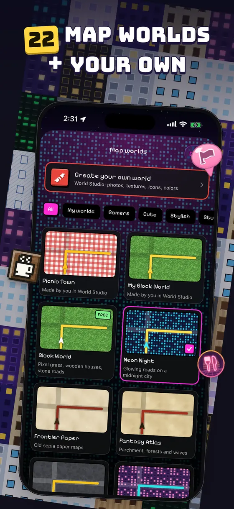
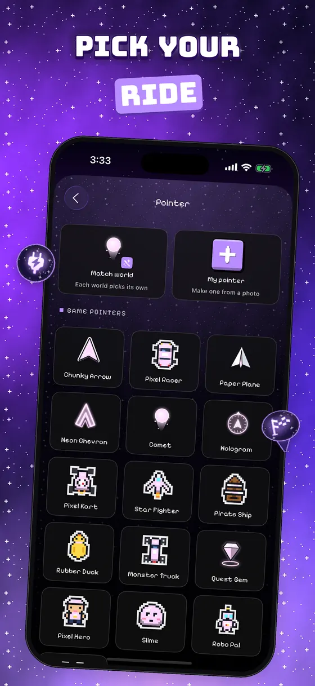

Trung tâm trợ giúp ROAMO 1.0
Chúng tôi có thể giúp gì?
Hướng dẫn từng bước cho ROAMO trên iPhone, iPad, CarPlay và Apple Watch, cùng câu trả lời về mua hàng và quyền riêng tư.
Bản dịch này chỉ nhằm thuận tiện cho bạn đọc. Nếu có khác biệt, bản tiếng Anh được ưu tiên áp dụng.
Bắt đầu trong một phút
ROAMO là ứng dụng dẫn đường từng ngã rẽ thực thụ. Không cần tạo tài khoản: mở ra là đi.
- Cho phép vị trí để ROAMO hiển thị bạn đang ở đâu và dẫn đường.
- Tìm hoặc nói: gõ địa chỉ hay địa điểm, chạm micro, hoặc chọn một nhóm quanh đây như xăng, sạc xe hay cà phê.
- Xem trước tuyến đường bằng ô tô, xe đạp hoặc đi bộ, so sánh tuyến nhanh nhất và ngắn nhất.
- Chạm Đi. Thẻ rẽ lớn, tốc độ cạnh biển giới hạn và giọng hướng dẫn đưa bạn tới nơi.
22 thế giới bản đồ, 2 thế giới miễn phí
Chạm Đổi thế giới trên bản đồ là mọi thứ được vẽ lại: mặt đất, nước, đường, nhãn và màu tuyến đường. Block World và Doodle Notebook miễn phí mãi mãi; ROAMO Pro mở cả 22 thế giới.
- Chọn một thế giới ban ngày và một thế giới ban đêm: các thế giới tối như Neon Night phát sáng sau hoàng hôn.
- Đổi thế giới ngay giữa chuyến đi, trên iPhone hay trên CarPlay.
- Mỗi thế giới có thể nói bằng giọng hoa tiêu riêng. Chọn giọng trong Cài đặt › Giọng hoa tiêu: Cổ điển miễn phí, các giọng nhân vật có trong Pro.


ROAMO trên CarPlay
Bản đồ phong cách game, tìm kiếm và chỉ đường từng ngã rẽ trên màn hình xe, đồng bộ với iPhone.
- Kết nối iPhone với xe bằng cáp hoặc không dây.
- Chạm ROAMO trên màn hình chính CarPlay.
- Tìm bằng bàn phím của xe hoặc chọn địa điểm gần đây, yêu thích, rồi chạm Đi.
- Chạm nút quả địa cầu để đổi thế giới khi đang lái, và Kết thúc để dừng.
Không thấy ROAMO trên xe? Trên iPhone mở Cài đặt › Cài đặt chung › CarPlay, chọn xe của bạn, chạm Tuỳ chỉnh và thêm ROAMO.

Trên màn hình khoá và Apple Watch
Khi đang dẫn đường, ngã rẽ tiếp theo đi theo bạn cả khi ra khỏi ứng dụng.
- Live Activity: ngã rẽ tiếp theo và giờ đến trên màn hình khoá và Dynamic Island. Bật trong Cài đặt iPhone › ROAMO › Hoạt động trực tiếp.
- Widget: thêm ROAMO vào màn hình chính để bắt đầu đường về nhà hoặc tới công ty chỉ với một chạm.
- Apple Watch: thẻ rẽ, bản đồ, Nhà, Công ty và địa điểm yêu thích ngay trên cổ tay. Cài từ ứng dụng Watch trên iPhone, mục Ứng dụng có sẵn.
- Siri: nói “Dẫn đường về nhà bằng ROAMO” hoặc “Tìm cà phê gần đây bằng ROAMO”.


Cá nhân hoá theo ý bạn
- World Studio (Pro): bắt đầu từ bất kỳ thế giới nào trong 22 thế giới rồi đổi màu, dùng ảnh của bạn làm texture và tự vẽ icon địa điểm. Chạm Đổi thế giới, rồi Tạo thế giới của riêng bạn.
- Con trỏ: chọn con trỏ kiểu game cho xe của bạn, hoặc tự làm từ một tấm ảnh.
- Biểu tượng ứng dụng: sáu biểu tượng thay thế mở khoá khi bạn lái, ở mốc 10, 50, 100, 250, 500 và 1.000 km. Xem Cài đặt › Biểu tượng ứng dụng.
- Chia sẻ thế giới: gửi tệp .roamoworld qua AirDrop, Tin nhắn hoặc Tệp. Tệp không bao giờ đi qua máy chủ.



Biến chuyến đi thành video
Mỗi chuyến đi có dẫn đường có thể thành một video phát lại hành trình trong thế giới của bạn, sẵn sàng cho TikTok, Reels hay Shorts.
- Chuyến đi được ghi lại khi bạn dẫn đường và chỉ lưu trên iPhone. Có thể tắt trong Cài đặt › Ghi lại chuyến đi.
- Khi đến nơi, chạm Tạo video chuyến đi, hoặc mở Cài đặt › Chuyến đi & video sau.
- Chọn khung hình (9:16, 1:1, 4:5 hoặc 16:9), độ dài, bộ lọc, tiêu đề và nhạc.
- Lưu vào Ảnh hoặc chia sẻ. Với Pro, video không có watermark và có thể dùng nhạc của riêng bạn.
Bạn cũng có thể thêm một đoạn quay từ camera trước, không có tiếng. Đoạn này chỉ được quay khi bạn bật và chỉ lưu trên iPhone.

Câu hỏi thường gặp
Làm sao khôi phục giao dịch mua?
Làm sao huỷ gói đăng ký?
Tôi được dùng miễn phí những gì?
Vì sao hiện “Đã đạt giới hạn dịch vụ bản đồ trong ngày”?
Làm sao đổi ngôn ngữ?
Làm sao chuyển dặm/km hoặc tắt giọng nói?
Chấm xanh không di chuyển hoặc hiện sai chỗ.
ROAMO chạy trên những thiết bị nào?
Chuyến đi và video của tôi có bị tải lên đâu không?
Liên kết hữu ích
Liên hệ
Gửi email tới info@deeplyai.app. Vui lòng ghi rõ đời iPhone, phiên bản iOS và mô tả ngắn về vấn đề. Chúng tôi thường trả lời trong vòng hai ngày làm việc.
Ảnh chụp màn hình là phiên bản tiếng Anh của ứng dụng.